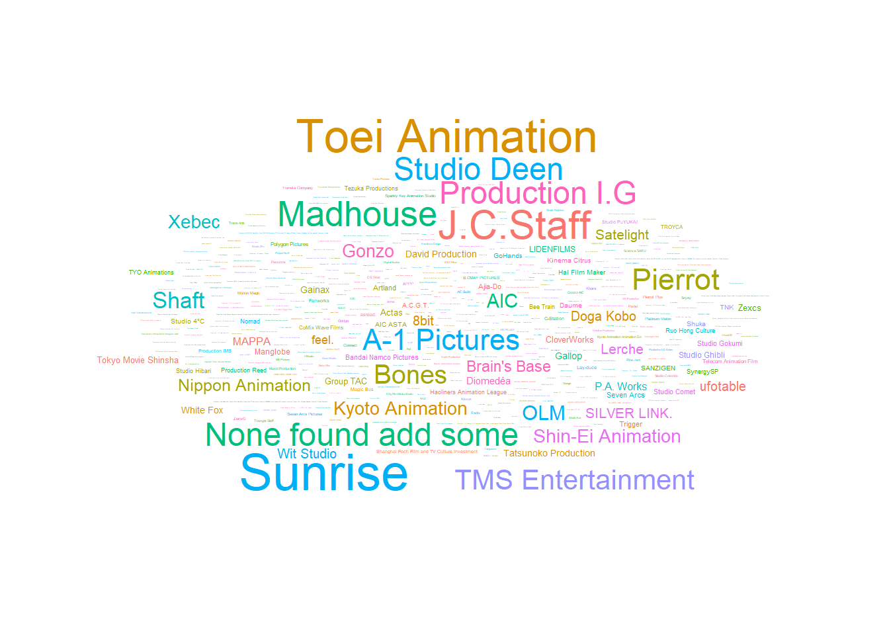
Project Report
1. Introduction
1.1 About Anime
What is the first thing that comes to your mind when you hear, see the word “ANIME”?
We probably think what is the difference between ANIME and any other media form is. Anime is a term used as alias for hand-drawn or computer animation. The word is the abbreviated pronunciation of “animation” in Japanese, where this term refers to all animation. Anime is prominent among teenagers from middle school to college. It has a lot of relevance with Manga, Light Novels and Games.
An anime is characterized by:
- Story telling
- Character building
- Character building
- Presentation of thoughts artistically
1.2 Project Motivation & Objective
Here is our hypothetical Problem Statement for this project:
An Indian billionaire wants to invest his money in Animation Industry and hence decides to hire a data analyst so that he could get him a better idea of the market. We, as data analysts are providing him a new tool and our interpretations from the data, so that he could successfully make his debut with a successful and hit anime.
For this project, we created a shiny app with R to analyze various factors of the anime and how do they affect the Popularity and Rank of specific animes.
1.3 Questions We Imposed
Here are a few questions laid down by us looking at the dataset:
- Was there any impact of COVID on different aspects of anime (eg. viewership)?
- Does a studio house focus on “quality” or “quantity” in the process of making of anime?
- What has more audience and viewership: “Movies” or “TV shows”?
- Can we identify the Target Audience with maximum viewership?
- Can a show be perfectly timed?
- With respect to premiering:
- on a particular season?
- on a particular month of the year?
- With respect to broadcasting episodes:
- During Weekends (Saturdays, Sundays)
- Just before the weekends (Fridays)
- Or during any other weekday
- With respect to premiering:
2. About our Dataset
2.1 Source and method of obtaining dataset
People rate anime, just like they do for any other TV show, a song or a movie. MyAnimeList is one of the preferred rating/ranking website for anime. The dataset is obtained from scraping this MAL website.
2.2 Describing datsaset variables
The dataset we obtained was having data for 5000 Anime, available data was >5000 Anime, but after 5000, NaN values were prominent in nearly all the variables. We scraped the data of 21 variables from the website. These variables are classified and described as follows:
2.2.1 Categorical Variables
- Name
-
Contains the name of the anime.
- Type
-
Indicates the platform on which the Anime was released. It basically consists of 6 unique entries namely: TV, MUSIC, OVA, ONA, SPECIALS.
- Status
-
Describes the current status of the Anime, Is It Still Airing? or Has it Finished Airing?, i.e. , it is still being telecasted or not.
- Aired
-
Describes the date on from which the Anime was broadcasted and the day on which it ended. For the animes are currently airing, the finished date has not been mentioned. (Obviously!)
- Premiered
-
Tells the season and year of release of the Anime. For example “summer 1990”. Premier had 195 unique value entries
- Producers
-
This variable describe the name of production houses for a particular anime they were more than 2000 unique entries in this column and no missing values.
- Licenses
-
According to data taken from forums of my animal list licenses are described as the people who make available and release the project.
- Studios
-
According to my anime is Forum Studios are described as the ones who actually make the project.
- Source
-
Tells us about the motivation from which anime was made sources like Manga, Visual Novels, Web Manga, Original are common sources for making an anime.
- Genre
-
Describes different combination of genre (category of art) which are present in that particular anime. Furthermore each entry in this column shows a combination of 3 to 4 different genre. This column had 621 unique entries with 1143 missing values.
- Rating
-
Denotes six type of ratings which classify is anime under restricted categories as well as categories in which parental guidance is required. No missing values were present in this column.
- Demographic
-
(According to tvtropes) “Shounen, shoujo, josei and seinen are also used to describe demographic groups as well as publishing categories; for example, most hobby manga are aimed at the seinen demographic. Despite this, the publishing categories do not necessarily align perfectly with the actual readership; for example, many shounen magazines have large female and adult readerships.”
- Image
-
Contains links of the images of the posters of the respective anime.
2.2.2 Numerical Variables
- Members
-
According to MyAnimeList members here means the number of members of the website who have added that specific anime to their watch list. It can be used to imply how popular an anime is. This column had one missing entry.
- Favorites
-
According to MyAnimeList favorites are the members who added that particular anime to their favorites anime list.
- Episodes
-
Denotes complete number of episodes in an anime.
- Duration
-
Denotes duration per episode for a series and time in hours minutes in a movie.
- Score
-
Denotes score given to a particular anime by my anime list the score is particularly calculated as a weighted mean of certain variables by MyAnimeList.
- Rank
-
Denotes the rank given by MyAnimeList it directly proportional to the scores given by the site.
- Popularity
-
Denotes the rank given according to popularity of the anime.
3. How did we obtain our dataset? (Scraping it is!)
3.1 Libraries we used in this process
- rvest
- tidyverse
3.2 Problems we faced in this process
Pages looked like the following:
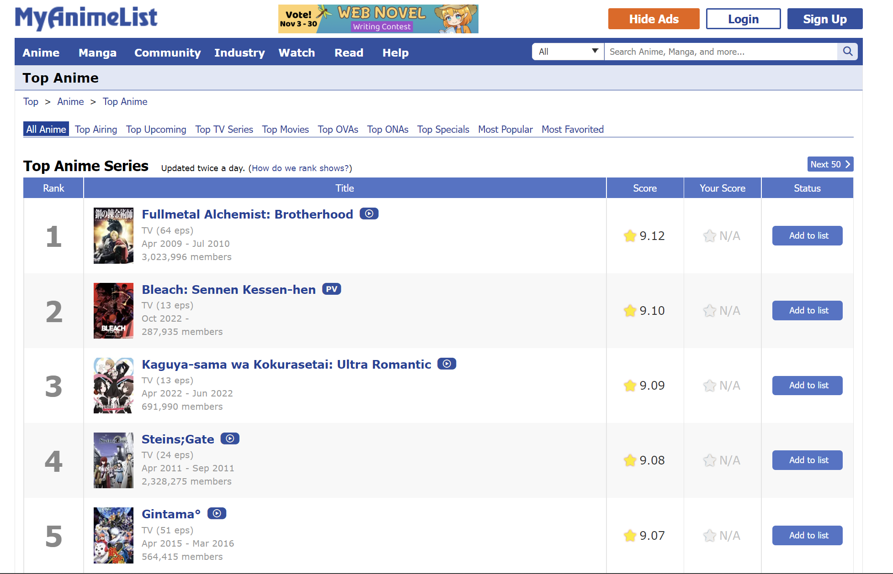
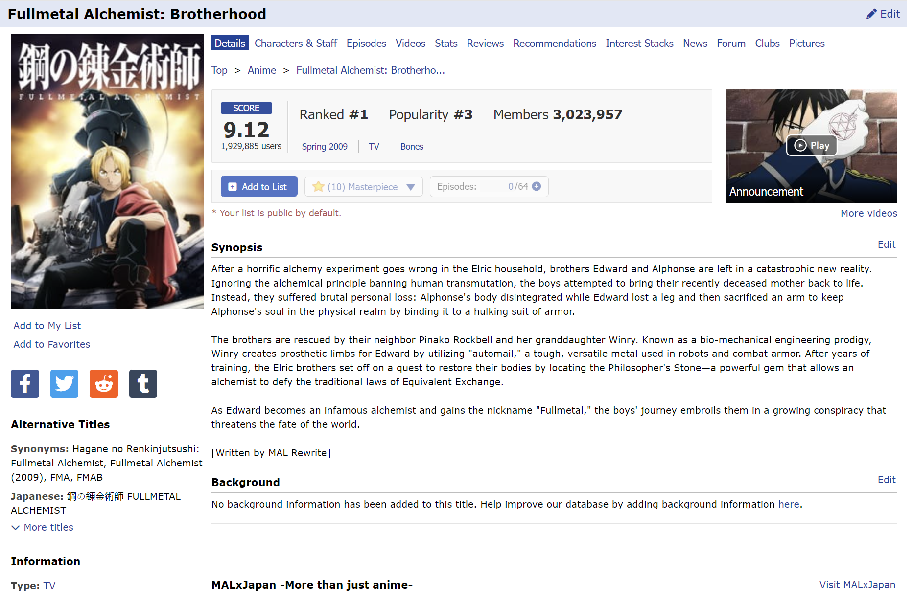
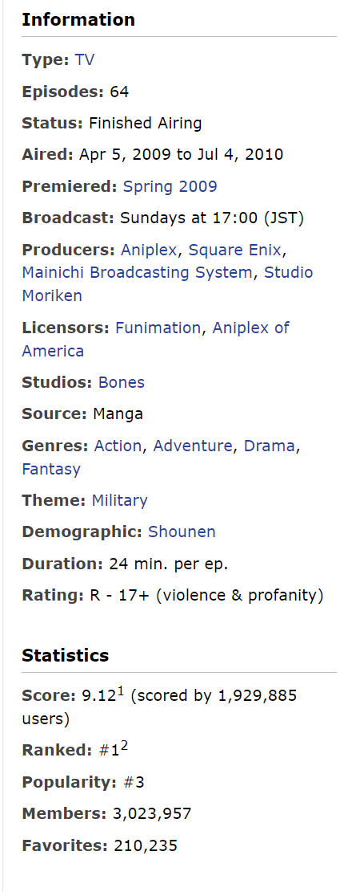
It showed ranks of Anime and had hyperlinks to get into each page for a particular Anime. Every page corresponding to an anime had “spaceit_pad” class in it, which has some of the important variables, but sequencing was different for each anime, making it tough to extract via list slicing.
3.3 Solutions we used to tackle the aforementioned issues
To get the codes we made a function “codes(input = number_of_anime )” which automated the process of code extraction.
Then we made an empty dataset with 21 columns (nomenclature mentioned in data description) function “values(input = text element from spaceit_pad class)”. This function took the extracted element of “spaceit” as input, then with grepl function checked that whether the name of column we assigned is present in any of the element of this list. Where it was true it assigned it a value at that particular index and if there was no TRUE value the NA was assigned to the remaining index. The output of this function was for a particular Anime by inputing its “spaceit_pad” and giving a vector of all the information of 21 columns which was later assigned as a row in our data frame
4. Cleaning the Dataset
4.1 Libraries we used in this process
- dplyr
- stringr
4.2 Method, problems and their solutions while cleaning data
4.2.1 Duration, Season Broadcast (days) column
In the duration column we had the data likes “1hr. 20min.”, “24min.”, “52min. pr. Eps”, our final output was a column in which all these values were calculated in minutes. Solution: Analyzed patterns which were recurring, then built a function “dur(entry from duration column)” calculated duration in min.
All the three columns shared common type of problems, in the remaining two it was not possible to directly use substring as index of extraction for each value differed (eg “Sundays at 17:00 JST”, “Unknown”,“Friday at 3:15 JST”), hence for each of them a function was build which had a vector unique entries(in which we want to see the output as, eg new <- c(“Sunday”,“Monday”), this function checked the presence of any element from “new” in the input, if the condition was satisfied then output would be the coinciding vector from “new”.
4.2.2 Genre column
Entries were like “ActionAction AdventureAdventure FantasyFantasy”, this was cleaned and transformed into a list first, then different Genre were clubbed into 6 broad catagories, namely Mystery, Romance, Action, Horror, comedy and Others as binary variables.
4.2.3 Categorizing numeric into category
Columns like score, year, demographic, Source (renamed abbreviations, reference in link) were transformed to category variables.
5. Visualising the Dataset
5.1 Libraries we used in this process
- ggplot2
- imager
- rvest
- ggpubr
- ggthemes
- ggwordcloud
- ggrepel
- tidyverse
- reshape2
- ggvenn
- treemap
5.2 Generating plot with the help of user defined functions
5.2.1 Function: three_var_na(col1, col2, col3)
This function removed NA values and formed the data set of the three columns so that this dataset could be directly used without errors of NA values while plotting.
5.2.2 Function: re() and plt()
These functions were used to build 9 plots at a time in which we could fix two variables and then analyze the effect of confounding 9 variables on the two. This helped us to brainstorm some interesting relations and have a motivation for our main plots.
5.2.3 Function: heat_m(list of numeric variables, method)
This function was used to plot heatmaps of numeric variables, we can change the variables in the function and graphs would change accouding to inputs, Methods used were Pearson and Spearman rank correlation.
5.2.4 Function: word_c(input = name of column)
This function generates word cloud for a given column with all the beautifications and adjustments done, major inputs were “Studios” and “broadcast”
5.2.5 Function: hist_p(input1 = name of column, input2 = number of top entries)
For a particular column of the dataset it generated histograms arranged in decreasing order, we could choose how many number of bars(each bar = unique category of the column) we want.
5.2.6 Function: pie_chart_genre(input1 = catagoric column: “SCORE”, “demographic”, input2 = unique entries in input 1 for which we want to see the output)
This function generated pie chart of genre column grouped according to “SCORE (9+,8+, ..)” or “demographic (like boys(12 to 18yrs))” column, From input2, for a selected input 1 we could add unique. Eg - colm <- “demographic” score_sub <- c(“Girls(12-18yr)”,“Women(18-40yr)”) pie_chart_genre(score_sub,colm)
5.2.7 Function: tree(input1 = Main column ,input2 = column on the basis of which Main column is grouped)
This builds tree maps
5.2.8 Function: vennd(input = subvectors of c(“Mystery”, “Romance”,“Comedy”,“Action”,“Horror”))
Generated venn diagram for genre, its input can vary according to the subvector we provided, hence can see the venn diagram (of max 4 var – function was designed accordingly)
5.2.9 Function: rec(input = dataset)
It will display the image of top 10 anime from the dataset.
5.3 Shiny app
The Shiny App made by our group had the following features:
- A Welcome Page tab
- An anime overview tab which contained summary histograms, heatmap wherein variables can be chosen by the user
- Multiple tabs (namely Demographic, Source, Type, etc) which contained visulisations of various parameters and showed their dependencies
- A recommendations tab where the app recommends the top 10 anime to the user
- And finally our data set wherein a user can search around anything (from anime’s name to the studio name to genre, etc)
5.4 Generating visualisations using our Shiny App
5.4.1 A Wordcloud of all the studios
5.4.2 A Pie-Chart showing Boys(12-18 yrs) dominating the demographics in recent years
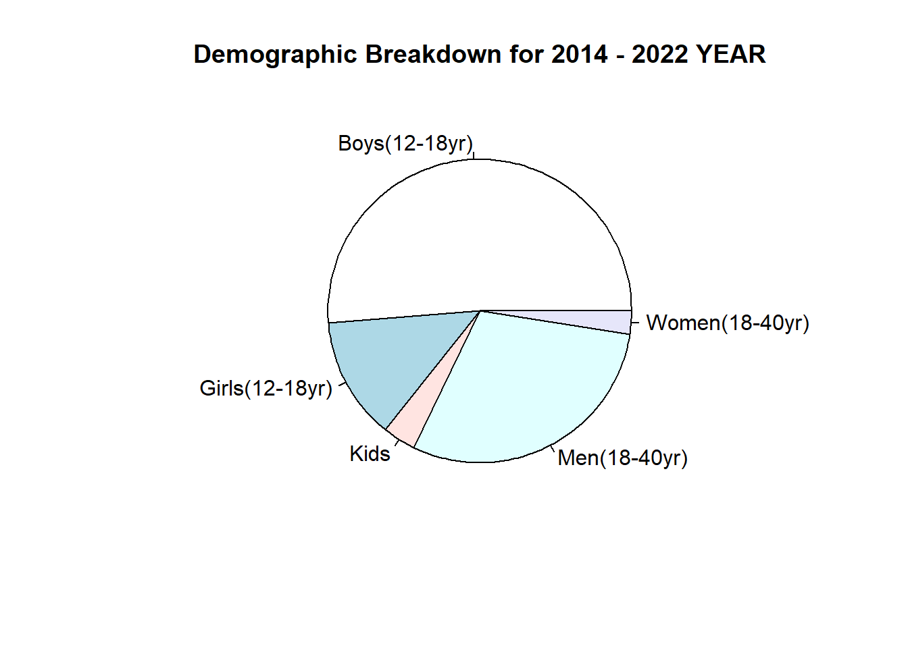
NULL5.4.3 A Venn Diagram showing the dominance of Action and Comedy over other genres
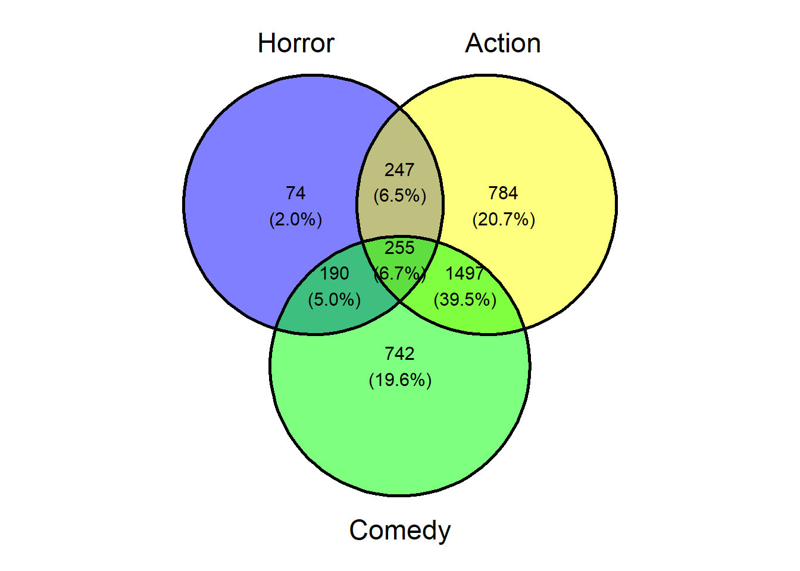
5.4.4 A Histogram showing the distribution of the sources of different anime
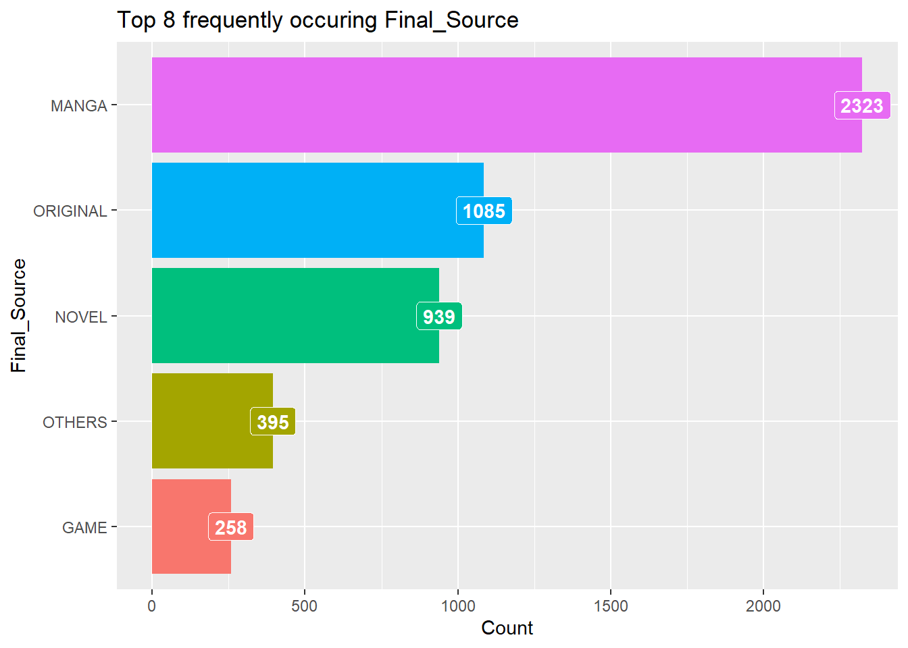
6. INTRESTING INFERENCES
6.1 Inference 1
General Expectations: Popular Anime Should have high Scores.
BUT
Popularity based Ranks and Score based ranks had Spearman Rank correlation 0.47 (Moderate Positive Correlation)
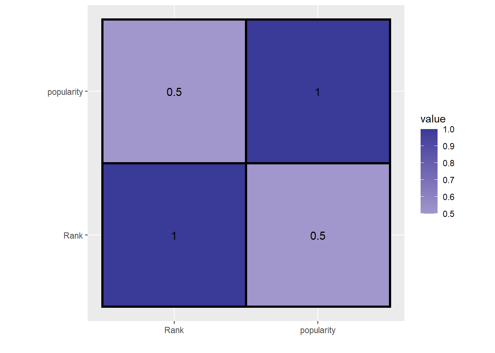
6.2 Inference 2
New Animes are popular than Old
Probable reasons: Lack of data of Animes before 1990 can give rise to bias in data. Moreover, Animation tools are much more advanced now than they were before 90s leading to more interactive visuals.
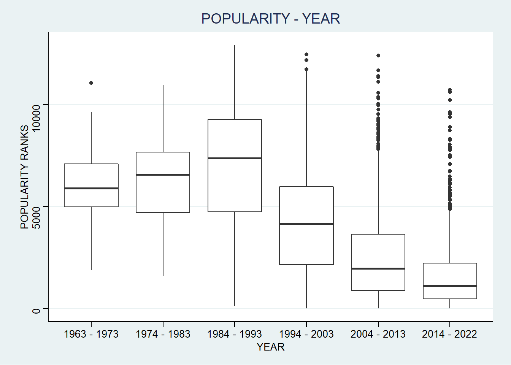
6.3 Inference3
OBSERVATION: xy = c (hyperbolic), kind of curve between Duration and number of episodes. Number of episodes increase when Duration decreases.
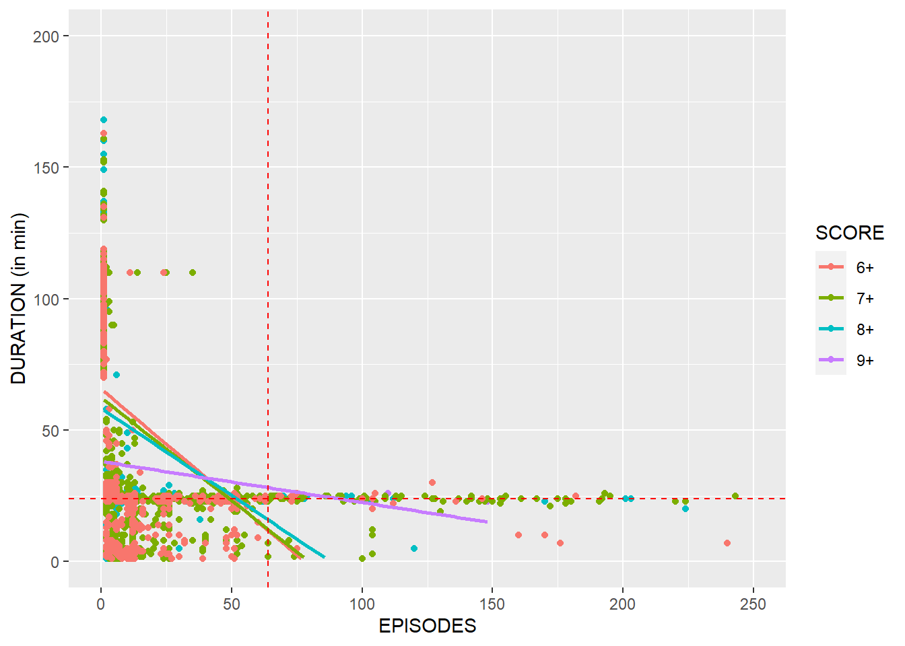
6.4 Inference 4
Claim: Anime launched in Summer and Winter season had no 9+ SCORE
Claim Status: Inconclusive
Reason: For the season column in the dataset we have more than 50% NA values, hence we cannot clearly claim this statement.
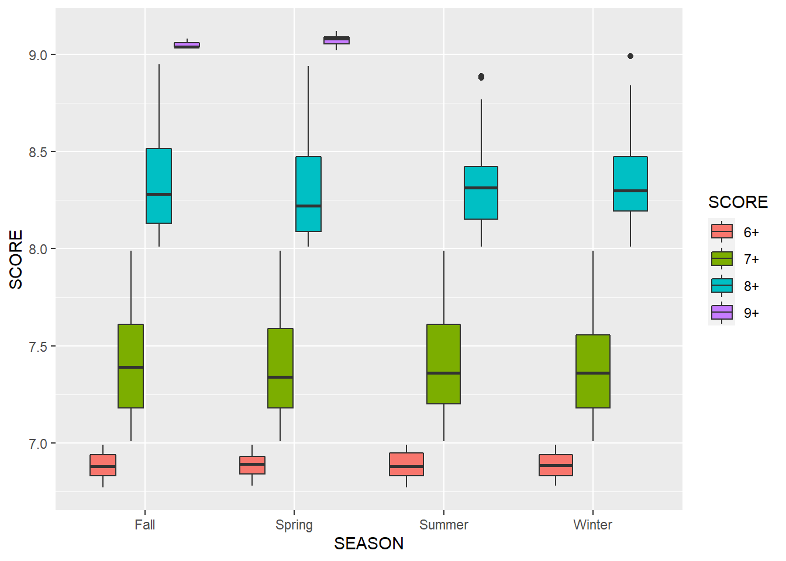
Inference 5
SCORE increased when animes were targeted on Boys OF age 12 TO 18 YEARS
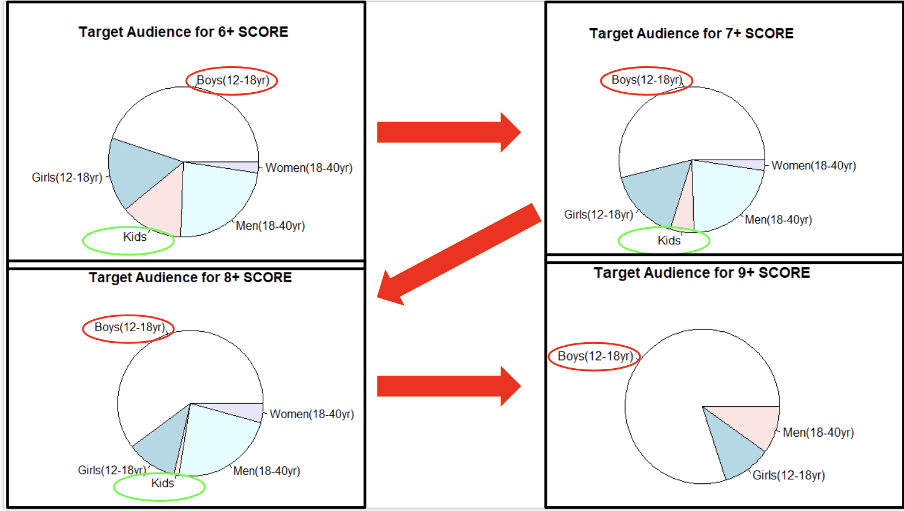
Inference 6
Animes targeted to Females had more ROMANCE and COMEDY than for males, whereas for Males ACTION and MYSTERY had a good proportion.
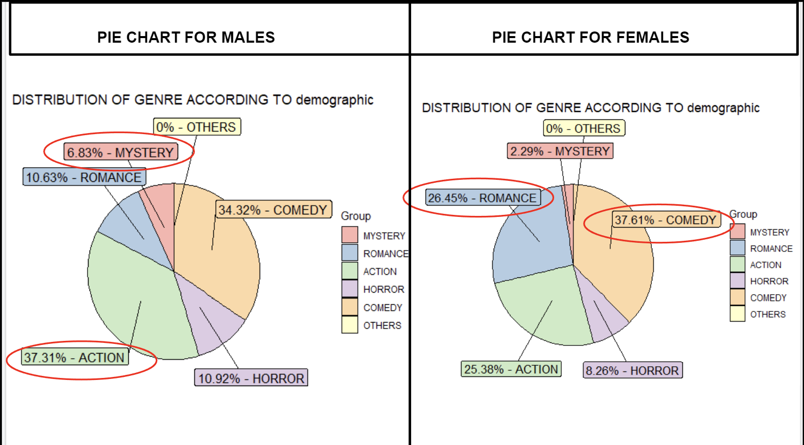
Inference 7
Clearly Fridays, Saturdays and Sundays were the most preferred days for broadcast while Monday was the least preferred!
7. Conclusions
Concluding this project we were able to build an app which would help us to make different templates of the preferred combination of different characterstic variables (genre, broadcast day, studios, etc.. ), we used in our analysis.
We can notice that there is no specific combination of charactersitics which guarantees a hit anime but it depends on how the person who is making the Anime wants to make it.
For particular choice of characterstic, example the target audience we can find different combination of factors which increases its popularity as well as score.
Also it depends on the external factors such as the money, which is to be invested and specific intention or goal for which the Anime is made. For example, an anime depicting protection of environment, which is meant for a nobel cause and hence we would want it to be highly popular irrespective of score, so that awareness could be spread across a variety audience. Moreover, we have already seen that it is not necessary that high score of an anime means that it is very popular too.
8. References
Dataset scraped from MyAnimeList
We read and used information regarding Japanese demographics from tvtropes and reelrundown
R documentation was very useful for finding functions in base R.